Direitos de imagem
Créditos das imagens
As fotos pessoais, de projetos, de trabalhos e dos certificados são minhas ou dos meus grupos. As outras são do Wikimedia Commons e têm licença livre. Algumas foram recortadas para caber na página.
| Imagem | Arquivo | Fonte | Autor | Licença |
|---|---|---|---|---|
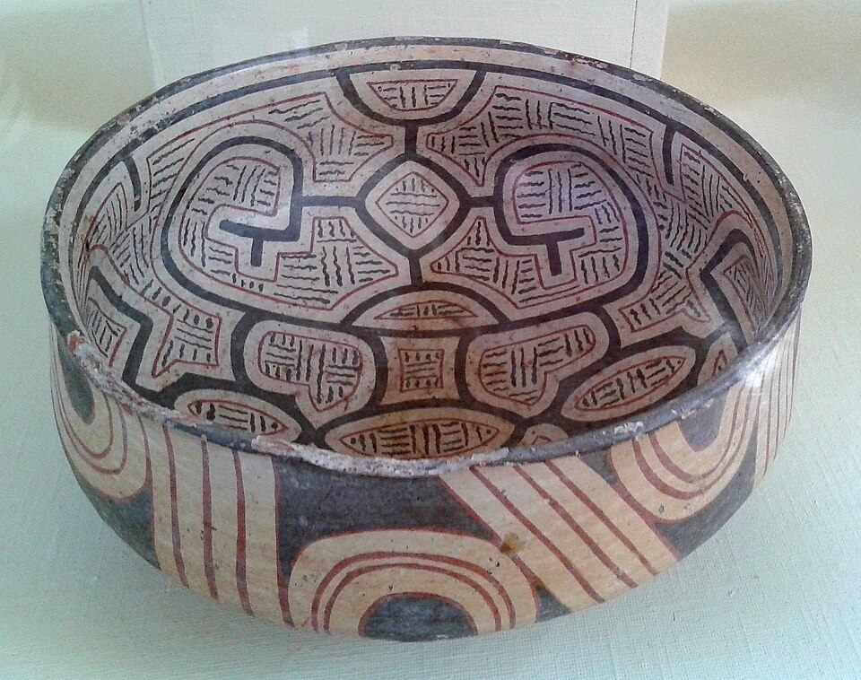 | imagens/areas/artes.jpg | Cultura Marajoara - Cerâmica MN 05.jpg | Dornicke | CC BY-SA 4.0 |
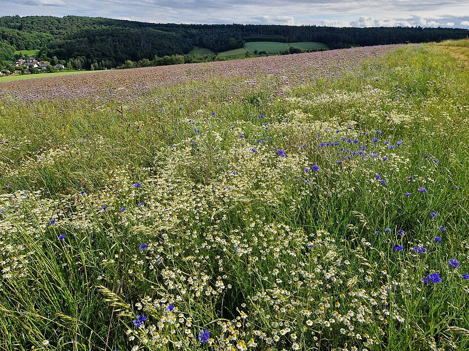 | imagens/areas/biologia.jpg | Ehrenbach, phacelia field with corn flower and chamomile.jpg | Gerda Arendt | CC0 |
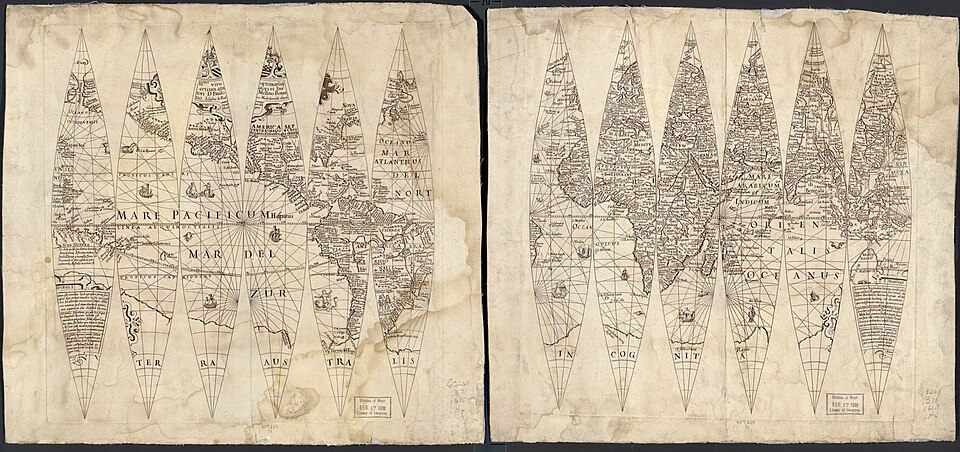 | imagens/areas/ciencias-humanas.jpg | Terrestrial globe gores. LOC 2008627640.jpg | Jodocus Hondius e Giuseppe Rossi | domínio público |
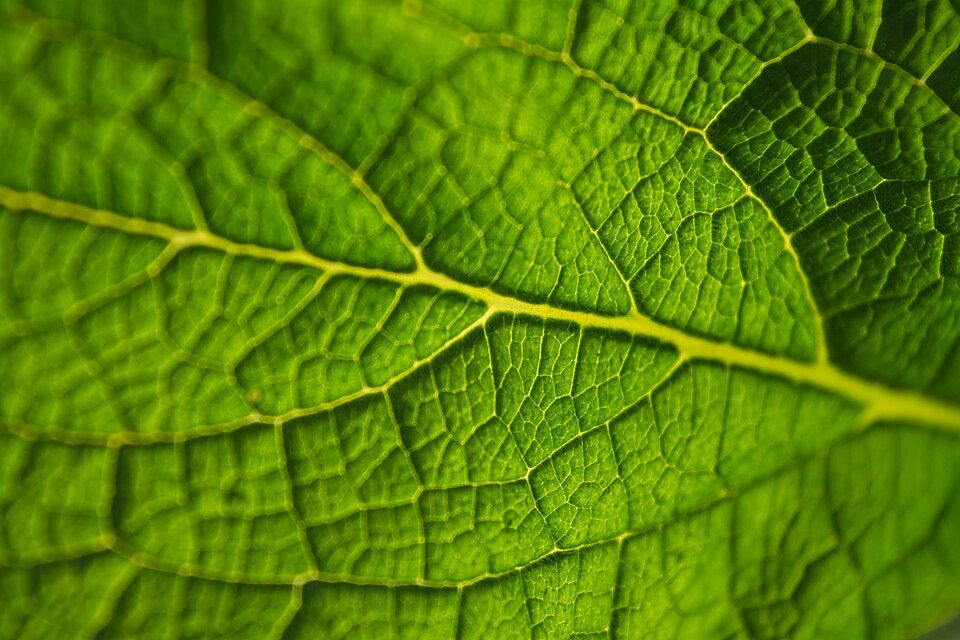 | imagens/areas/ciencias-natureza.jpg | Translucent leaf in macro 1 (Unsplash).jpg | Rodion Kutsaev | CC0 |
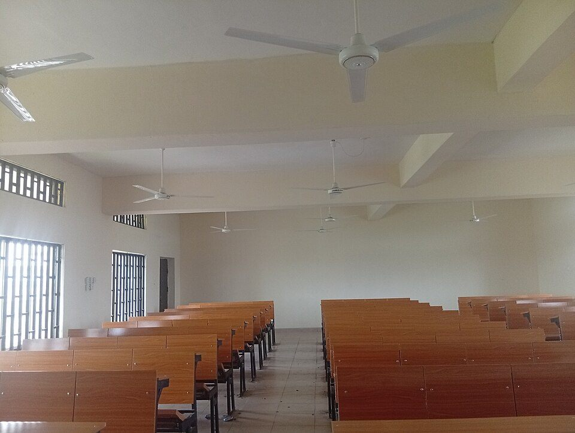 | imagens/areas/estudos-livros.jpg | Rows of Desks in Lecture Theatre.jpg | Paul The Writer | CC0 |
 | imagens/areas/filosofia.jpg | "The School of Athens" by Raffaello Sanzio da Urbino.jpg | Rafael Sanzio | domínio público |
 | imagens/areas/fisica.jpg | Normal posteroanterior (PA) chest radiograph (X-ray).jpg | Mikael Häggström | CC0 |
 | imagens/areas/geografia.jpg | Ponte estaiada Octavio Frias - Sao Paulo.jpg | Marcosleal | CC BY-SA 3.0 |
 | imagens/areas/historia.jpg | Orpen, William (Sir) (RA) - The Signing of Peace in the Hall of Mirrors, Versailles, 28th June 1919 - Google Art Project.jpg | William Orpen | domínio público |
 | imagens/areas/ingles.jpg | Red telephone box (London) in 2025.04.jpg | CAPTAIN RAJU | CC0 |
 | imagens/areas/linguagens.jpg | Vintage Imperial Typewriter The Good Companion Close Up.jpg | Bhullargraphic | CC BY-SA 4.0 |
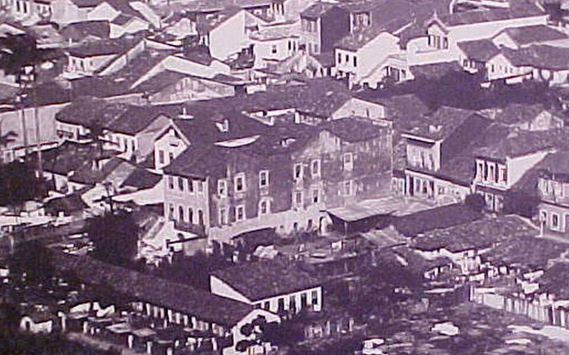 | imagens/areas/literatura.jpg | Cortico Cabeca de Porco 01.jpg | Marc Ferrez | domínio público |
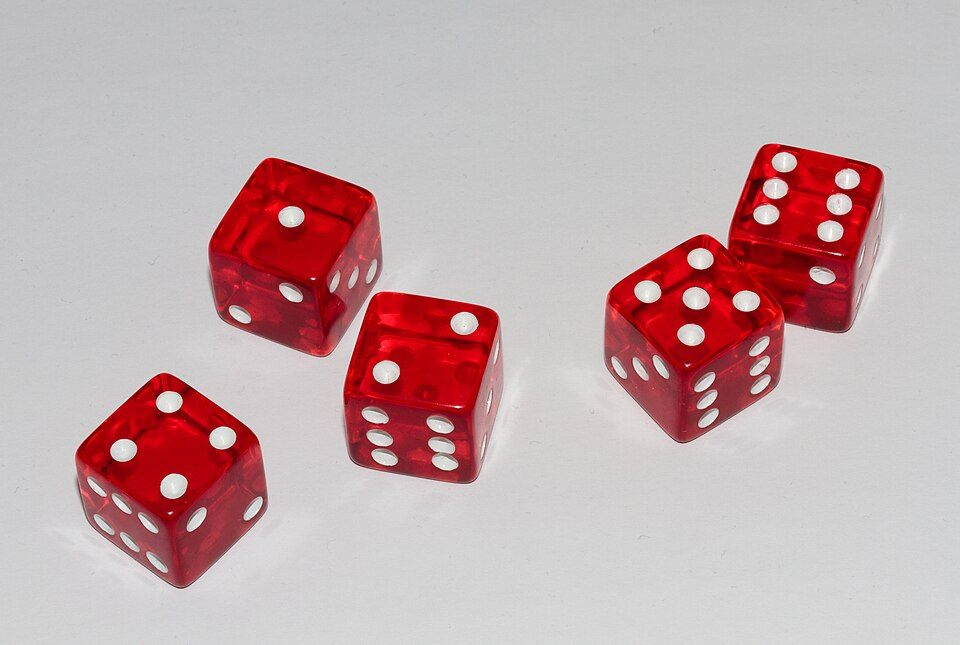 | imagens/areas/matematica-estatistica.jpg | Dice - 1-2-4-5-6.jpg | PierreSelim | CC BY 3.0 |
 | imagens/areas/matematica-funcoes.jpg | Jet dEau with raimbow.jpg | Asmus Koefoed | CC BY-SA 3.0 |
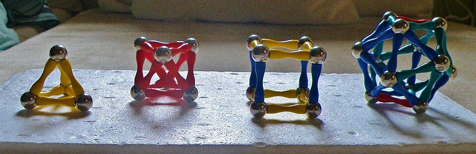 | imagens/areas/matematica-geometria.jpg | Models of four platonic solids.JPG | Prateek Karandikar | CC BY-SA 4.0 |
 | imagens/areas/portugues.jpg | Everyday joy zine making.jpg | Fhwatson | CC BY 4.0 |
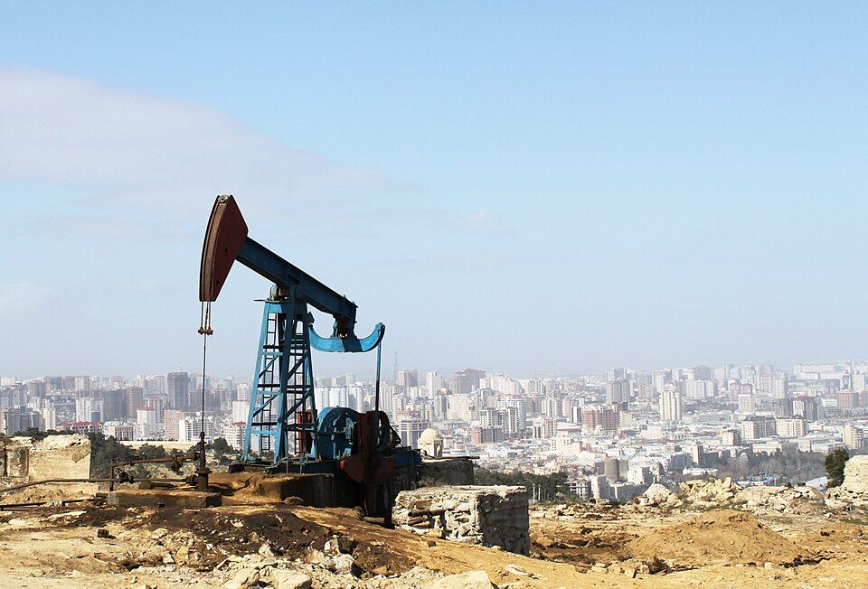 | imagens/areas/quimica.jpg | Oil pump in Baku.jpg | Gulustan | CC BY-SA 3.0 |
 | imagens/areas/sociologia.jpg | Dia-da-mulher-manifestacao-na-praca-da-se-sao-paulo (32946536990).jpg | CTB | CC BY 2.0 |
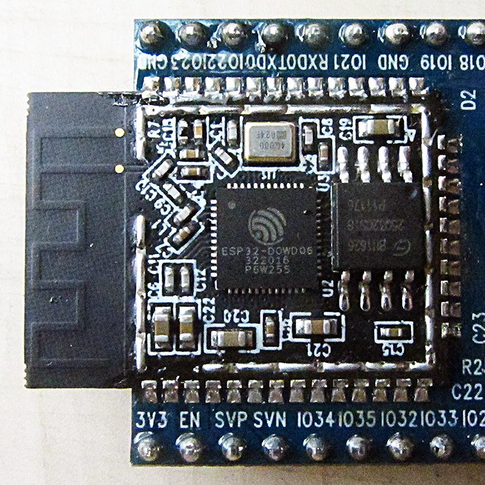 | imagens/tecnica/esp32.jpg | Espressif ESP-WROOM-32 Wi-Fi & Bluetooth Module.jpg | Brian Krent | CC BY-SA 4.0 |
 | imagens/tecnica/sensor-ultrassonico.jpg | HC SR04 Ultrasonic Module.jpg | Suyash Dwivedi | CC BY-SA 4.0 |
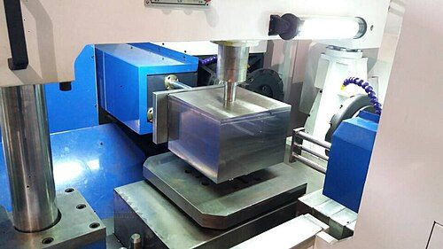 | imagens/tecnica/usinagem-cnc.jpg | Double side horizontal cnc milling machine loading 3.jpg | Zjw0558 | CC BY-SA 4.0 |


.jpg){kind=link}


_chest_radiograph_(X-ray).jpg){kind=link}

_(RA)_-_The_Signing_of_Peace_in_the_Hall_of_Mirrors,_Versailles,_28th_June_1919_-_Google_Art_Project.jpg){kind=link}
_in_2025.04.jpg){kind=link}


.jpg){kind=link}